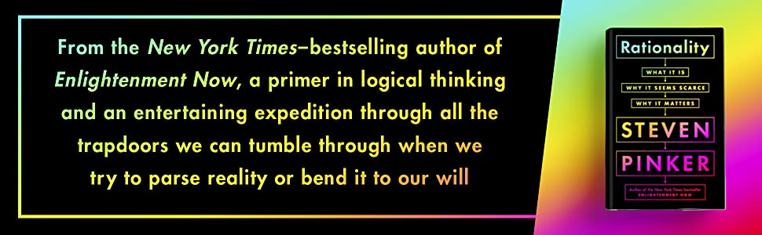

理性 Rationality

理性
什麼是理性，我們為什麼缺乏理性
我們可以肯定地假設沒有完全理性的人，但是客觀真理存在的信念，讓我們創建規則得以更接近理性。
理性讓我們登上月球、發明電腦、根除天花等疾病，以及在短短一年內開發出對抗致命全球流行病的疫苗。
理性如何運作以及我們如何培養理性？ 這正是本文探討的內容！
-
• 為什麼無知可以成為一種理性的選擇？
-
• 數馬的牙齒可以教給我們什麼科學知識
-
• 我們為什麼害怕變成自作聰明的傻瓜。

1. 理性是達到目的的手段。
讓我們從頭說起：什麼是理性？字典告訴我們，理性的意思是“有理智”，理智來自拉丁詞ratio，意思是——“理智”。詞源解釋看似在繞圈子，哲學家將理性解釋為使用知識來實現目標的能力。
讓我們拆解一下，知識一詞是指確證的真信念（JTB理論），被證實的（justified）、真的（true）和被相信的（believed）。如果某人故意按照錯誤的信念行事，我們不會相信他是理性的，但理性遠遠超過於簡單地思考“1 + 1 = 2”。
1890年美國哲學家威廉詹姆斯寫了一篇文章關於理性和非理性行為的區別。詹姆斯觀察到，如果我們將鐵屑撒在桌子上並在附近放置一塊磁鐵，鐵屑會飛向磁鐵並吸附在磁鐵的表面，但是如果用一張卡片蓋住磁鐵，鐵屑會壓在卡片表面上——鐵屑不會繞過卡片直接接觸吸引他的磁鐵。
現在看看莎士比亞的《羅密歐與朱麗葉》。朱麗葉是羅密歐的“磁鐵”，當羅密歐奔向茱麗葉的道路沒有阻礙時，他會像鐵屑飛向磁鐵一樣，直接奔向茱麗葉，但理性和非理性行為之間區別在於，當羅密歐發現前往茱麗葉身邊的道路被擋住時，他會改變路徑。羅密歐會爬上牆去親吻朱麗葉的唇，他們不會各自停留阻擋他們障礙的前方，不會像磁鐵和卡片上的鐵屑一樣，愚蠢地壓著障礙物的兩面。在劇中，羅密歐與朱麗葉利用他們對世界的知識來克服障礙，儘管家人的阻擋，這對情侶運用智謀來對對抗敵對的家人。
對於詹姆斯來說，這就是非理性和理性行為區分開來的原因。鐵屑朝著目標直線移動，但是他們通往目標的道路是固定的，卡片很容易阻礙他們。對於理性的人來說，情況正好相反。羅密歐與朱麗葉想要的結局是在一起，但對於如何實現這目標的方法非常靈活。
這就是人類理性的行爲：當一條路受阻時，我們總是可以嘗試另一條路。
2.理性幫助你在情感之間做出決定。
我們剛剛論證了理性是達到目的的一種手段，但我們追求的目標從何而來？一個來自 18 世紀的蘇格蘭哲學家大衛˙休謨的回答。休謨認為目標來自情感（passions），也就是慾望、需求和情緒，如愛、憤怒、驕傲、嫉妒和恐懼，理性是“情感的奴隸”。休謨指出理性無法告訴我們應該追求哪些目標，但這並不是非理性行為的論證。從邏輯上講，只能說目標來源既不是理性的，也不是非理性的——它們是不理性的。
而有時候，我們必須在相互衝突的目標之間做出選擇，這就是我們呼籲理性的時候。如果人們只在乎一件事，人生會簡單許多：享樂主義者肆無忌憚地吃喝玩樂，而有野心的人追求名利、財富，不用在乎孩子與其他追隨者。然而，生活並非這樣。我們渴望快樂、舒適和自由的同時，我們也想要擁有健康、受人愛戴，和屬於自己的孩子。簡而言之，目標有時會相互牴觸——我們不能總是得償所願，但是我們該如何決定要追求哪些目標以及放棄哪些目標？
在享受當下和健康飲食之間進行權衡，我們對世界的了解告訴我們，健康飲食和鍛煉不僅可以延長預期壽命，還可以讓我們保持良好的體態，意味著我們能享受更多額外的歲月，這也可能會給我們帶來更多的滿足感，因此健康似乎是比享樂主義更好的目標。野心也是一樣，當你為達目的不折手段可能在短期內促進職業發展，但也會讓未來能依賴的人疏遠你。
理性：給定一個標準來比較目標隨著時間推移的相對價值，從而幫助我們確定目標的優先次序。
3.無知和自我約束可以成為理性的選擇。
知道某事並不能保證你會對此保持理性。你的意志力通常無法抵抗住誘惑。從古希臘創作的史詩《奧德賽》中借鏡的靈感，英雄奧德修斯為了回家必須行駛過一座島上居住著「賽蓮」的神話生物，它們會用迷人的歌聲引誘水手到島嶼的岩石海岸上觸礁。
幸運的是一位女巫告訴奧德修斯如何避免這種致命的誘惑：將自己綁在船的桅杆上，並用蠟塞住水手的耳朵。奧德修斯聽從了她的建議，並在這段時間倖存下來，這是一個值得我們學習的策略，抵制誘惑的一種方法是阻止自己採取行動。如果你在吃飽飯後去購物，更容易抵擋街販小攤零食的誘惑。同樣，如果你告訴雇主要為自己留退休金，你就不能動用這筆知道應該儲蓄的錢。這種奧德修斯式的自我約束與意志力無關——而是將自己綁在隱喻的船杆上。
奧德修斯的水手們因為蠟耳塞沒有聽到魔音，因為不知道魔音而避免災禍，乍一看，這是一種奇怪的策略，難道不知道比較好？知識不是力量嗎？當然，知道總比不知道好，因為你可以決定要不要採取行動？矛盾的是，有時選擇無知是理性的。
有些人決定不去查明他們是否有遺傳父母不治之症的基因，因為知道這件事無法避免他們患上遺傳疾病，還會活在擔憂害怕的陰影底下。銀行會張貼公告給潛在的搶劫犯，讓他們明白行員不知道保險箱的密碼，因此威脅行員沒有意義，沒有人可以透露他們不知道的內容。簡而言之，無知可以保護我們受傷害。
無知還可以抵消偏見。這就是為什麼陪審團會被禁止看到從強迫供詞中收集到的不予採信證據。優秀的科學家通過雙盲研究來保護他們的工作以防止偏袒，在進行試驗時，受試者與施測人員雙方皆不知道受試者屬於實驗組或是對照組(控制組)，直到資料蒐集完成後核對受測者代碼才知道分組。
有時無知有助於人們保持客觀。
4.科學將理性應用於現實世界。
我們對世界可以做出千萬種的陳述。以“所有單身漢都未婚”的說法為例，這個說法是真的嗎？邏輯上一定是——單身漢不能結婚，畢竟單身漢的概念是指未婚的成年男性，因此，這個陳述是不可否證的：沒有辦法反駁它。
一個經驗主義的主張“所有的單身漢都不快樂”，要證明它的可否證性，你需要詢問一個有血有肉的單身漢他們是否快樂。如果你找到一個心滿意足的單身漢，你就已經反駁或否證了這一說法。邏輯幫助我們解開第一個陳述，但我們需要科學來驗證第二個陳述。
1432年一群英國教徒爭論馬到底有多少顆牙齒。他們的辯論既博學又爭鋒相對，爭論持續了兩個星期，一個呼籲亞里士多德作品的派系爭辯，馬的牙齒是30顆；第二個派系通過引用晦澀的古代文獻來駁斥證明，馬的牙齒是 50 顆；第三組表示柏拉圖和聖經的結論都支持是45顆，終於到了第十四天，一位年輕的修士開口說“我們為什麼不出去，看看馬的嘴巴？”
這故事常被認為是 16 世紀英國哲學家、科學家弗朗西斯·培根所虛構的，但它生動地說明了培根與理論派學者之間觀點的差異。第二組由受過教會教育的知識分子組成，他們相信只有從理論文獻中衍生出來的邏輯模型才能幫助我們理解世界，培根則和年輕的修士一樣，認為我們必須走到外面，開始數馬的牙齒。
如果我們不收集經驗證據，我們就無法擺脫“迷信”。現今，我們大多使用一個專有名詞——確認偏誤（confirmation bias），即選擇性地回憶、蒐集有利證實我們主張的細節，忽略不利或矛盾的資訊，你如何區分科學和偽科學？對於大多數科學家來說，這是一個可否證性的問題。
我們是在尋找證據可以否證自己的假設，還是在不可證偽的理論中自欺欺人？
5.制度讓我們減少偏坦——甚至更理性。
美國心理學家大衛邁爾斯的一神論（monotheism），即認為只存在一個「囊括一切的神」，這理論基於兩個主張，首先是有神的存在，第二你我都不是神。這與理性有什麼關係？理性主義即對客觀真理的信仰，也有類似的結構，首先表明有一個客觀真理，其次，你和我都不知道它。因此，理性絕不是傲慢地聲稱知道所有一切——它是一種抱負（aspiration）。沒有任何一位凡人可以聲稱他獲得永恆真理，但相信“真理存在”有助於我們制定規則，使我們相較於個人作為一個社會可以更接近真理。
1788 年詹姆斯麥迪遜寫道，如果人類是完美的，政府就沒有存在的必要，美國政治家將人性視為政治問題的原因，我們都不是完美的，我們自私又自利，常常過於偏袒自己的需求，而對鄰居的需求視而不見，甚至有時我們會踐踏他人以取得成功。
麥迪遜對這個政治問題的回答不是壓制人性——而是創造一個與其共存的政治體系，“利用野心來抵消野心。”人們可以自私自利，但要建立一個制衡制度，以防止任何一個人或派系對他人進行暴政。
制度製衡不僅可以防止暴政，還可以阻止某些有缺陷的個體將他的愚蠢強加給我們其他人。以法律中的對抗制為例，該制度使律師與律師對立，並將決策權留給公正的陪審團和法官。匿名同行評審在學術界也發揮著類似的作用，確保理性的批判，而不是從怨恨和競爭的角度進行分析。在公共領域，言論自由確保了可能是錯誤的流行觀點和可能是正確的非主流觀點都能得到公平的聆聽。
套用麥迪遜的話說，如果人類是完全理性的，那麼這些機構就沒有存在的必要，由於沒有凡人能夠獲得完整的客觀真理，因此我們需要這些機構。
我們越是不同意彼此的觀點，就越有可能至少我們之中的一人是對的。
6.為自己的利益懲罰他人以創造更理性的公共財。
如果你想在音樂會有更好地視野，你會站起來，但這會遮住其他人的視線，所以他們也起身，很快，每個人都站了起來，但沒有人有好的視野。軍備競賽遵循同樣的邏輯，如果一個國家花費大量資金開發遠程導彈，他敵對的國家做相同的事也很合理，但結果會導致兩國都變得更窮。這兩個案例都說明了理性的悖論之一，當我們都採取理性行為，結果對每個人都變得更糟——這種現象被稱為公地悲劇（tragedy of the commons）。
這並非是不可迴避的自然事實——我們可以通過制定正確的規範來解決。作為社區一員，我們受益於馬路、下水道和學校等公共財，這些財產是共有地：每個人都可以使用它們，我們都有責任維護它。但如果我們可以使用這些財產，同時讓其他人買單，我們會得到更多便宜。換句話說，理性的選擇是搭便車。
如果每個人都選擇搭便車，社區將沒有任何資金來維護公共建設，沒有人會希望這種結果，但也沒人願意在其他人不繳納稅的情況下繳稅——這是傻瓜收益（sucker’s payoff）。最後會演變成一個雙輸的局面，讓所有人的境況變得更糟。那麼我們該如何解決這個困境呢？讓我們看一下經濟學家和心理學家採用的實驗室測驗。
參與者被給予一筆錢，他們能將部分的錢扔進公共罐子裡，他們每投入一美元，實驗者就會增加一美元到罐子中，總體而言，參與者最好的選擇是極大化他們的貢獻，但對自身來說，個人最好的選擇是囤積現金並讓其他人捐款，後者是參與者選擇最多的策略，一旦有人注意到別人停止捐款，他們也會停止為公共捐款。除非實驗者罰款搭便車的人，在懲罰搭便車行為的情況下，捐款達到最高水位，最後的情況對每個人都有利。
在現實世界也是如此，當我們知道違反規則的人會受到懲罰，我們會更樂意繳納稅。
不僅僅是我們不想進監獄——我們也討厭這種自以為聰明的傻瓜！
7.我們最重要的道德觀念之所以令人信服，是因為它是理性的。
正如前面所見，世俗的法律迫使我們照顧公共利益。許多人認為宗教法律有更重要的作用：它們迫使我們保持道德。這個論點已經存在了很長時間，從2400年前的柏拉圖開始，但這說法站得住腳嗎？希臘哲學家不這麼認為，如果某件事是道德的，遵循的理由僅僅是因為上帝的命令，柏拉圖認為上帝這樣的誡命是不理性的，它只是一時興起，但是，如果上帝確實有他的誡命的理由也就是說，如果他命令某事的理由是因為它是道德的——柏拉圖的結論？道德可以建立在理性之上。
人類是自私和自利的，我們渴望對我們有益的東西，即使它損害了他人的利益，但我們也是社會動物，我們生活在社會中，在需要時依靠他人幫助我們，並害怕別人無緣無故地傷害我們，那麼我們該如何相處呢？ 首先，我們需要進行理性的對話並就一些規則達成一致的認知。對於推論來說，沒有什麼比不一致更致命的了，如果一組信念包含矛盾，它可以用來推斷任何事情。簡而言之，這是無政府狀態的秘訣。
想像一下，我捍衛我搶劫你的權利，同時堅持你不能搶劫我，這樣的“規則”是矛盾的，每個人同時是自己認為的“我”和他人口中的“你”，這意味著任何說我可以但你不行的論點，都是荒謬的。基於這點，我們會同意規則必須平等地適用於所有人。理性將我們引向令人信服的道德理念——己所不欲，勿施於人，如果我不想被你搶，我就不應該搶你。
以你希望被對待的方式對待他人，
總結
理性是一種工具，幫助我們追求人生目標。理性還通過比較短期和長期利益幫助我們排定目標的優先次序。然而，有些道理是自相矛盾的，在某些情況下，無知是比知識更理性的選擇。在另一些情況下，最壞的結果是每個人都對自己的利益保持理性，而忽視了共同利益，正是因為這些悖論，我們才將理性嵌入到製度中，當我們的規範迫使我們變得理性時，我們的生活就會變得更加美好和公平。